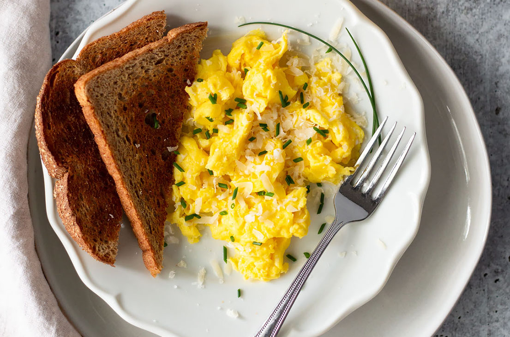

Perfect Scrambled Eggs

Why it's so good!
Ready in minutes and full of protein, this simple dish is a classic which every home chef spends time perfecting. For this recipe we just want the basics. No cream or milk, just eggs, butter, chives and seasoning. We want to use technique to get them as creamy as we can.
Ingredients
- 3-5 eggs
- Butter
- Chives
- Salt and pepper
- Wholemeal bread
Steps
- Preheat your non-stick pan on a medium heat.
- While the pan is heating up, crack your eggs into a bowl. Season generously with salt and pepper and also add the chives. You can use freshly chopped chives or dried chives. Whisk thoroughly with a fork. You want to break up the stringy whites and combine them fully with the yolks. Just like with the seasoning, be generous with your whisking· You'll want to stick your bread in the toaster at this point too.
- Once it's hot enough, add 10-15g room temperature butter to your pan. It should melt straight away and start to slightly foam.
- Add the eggs as soon as you see that foaminess in the butter.
- At this point all your attention should be on the eggs. Give them around ten seconds after they've gone in the frying pan to settle, and then use a wooden spoon to stir the mixture. Stir frequently as we want them to be cooking evenly.
- When the eggs are thirty seconds from perfect - ie. when a small amount of liquid egg still remains - take the pan off the heat and finish off the eggs with the residual heat from the pan. This will ensure the eggs retain their moisture and creaminess.
- Serve on toast. Freshly crack some more black pepper on top. Garnish with freshly chopped chives if you used them earlier.